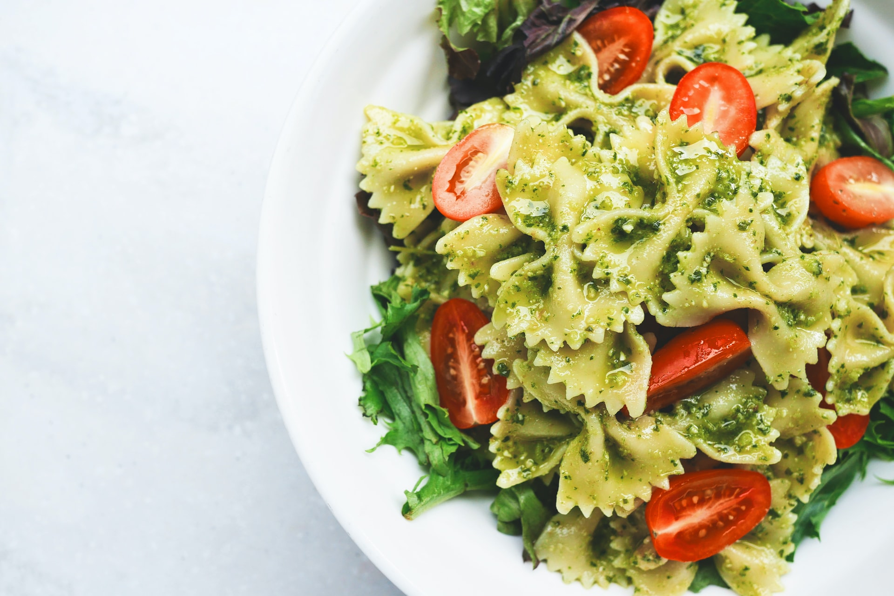
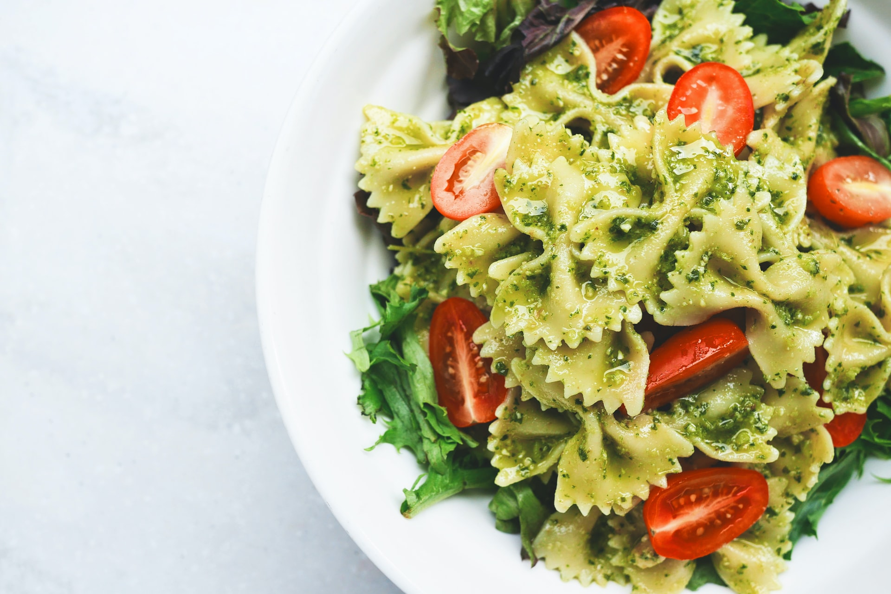

With the joint collaboration between Chef Samson Oketunmbi and interior decorator Will Swatz, S M N V Restaurant was created with our enviroment styled like a saloons of yore and food and wine that will surely make you want to come back for more. S M N V is where East Austin returns to the Old West.
OUR FAVORITE DISH
Buttermilk Flapjacks
Two flapjacks served with molasses and our signature sassafras-infused whipped cream. Fresh fruit additional $4.
Buckwheat Cakes with Honey
Two thick buckwheat cakes served with honey and our signature sassafras-infused whipped cream. Fresh fruit additional $4.
Mutton Stew
Tenderized mutton, carrots, celery, tomatoes, onion, rosemary, and black pepper. Served with two sourdough biscuits $10.
Steel Cut Oatmeal
Served with molasses, bananas, and fresh berries $6.
Wild Turkey Club
Thick cuts of roasted wild turkey, wild onions, lettuce, tomato, mayo, and black bread $20.

 



“From the sawdust on the ground to the mounted taxidermy on the walls, smnv is where modern Texans go to relive the turn of the 19th century. Their dishes are simple, hearty, fresh, and all-around delicious.”
Food Magazine
“By focusing purely on food and ambience, smnv provides the authenticity of the Old West without the costumes and playacting of a themed restaurant. You can bring your cowboy boots if you want, but the humble and relaxed atmosphere asks that you come as you are.”
Hungry Times
LOCATION
123 Willow Street Denver, co 80222.
HOURS
Tue - thu, 8 am - 10 pm
fri - sun, 8 am - 11 pm
CONTACT
303-333-0000
template.placeholder@yahoo.com